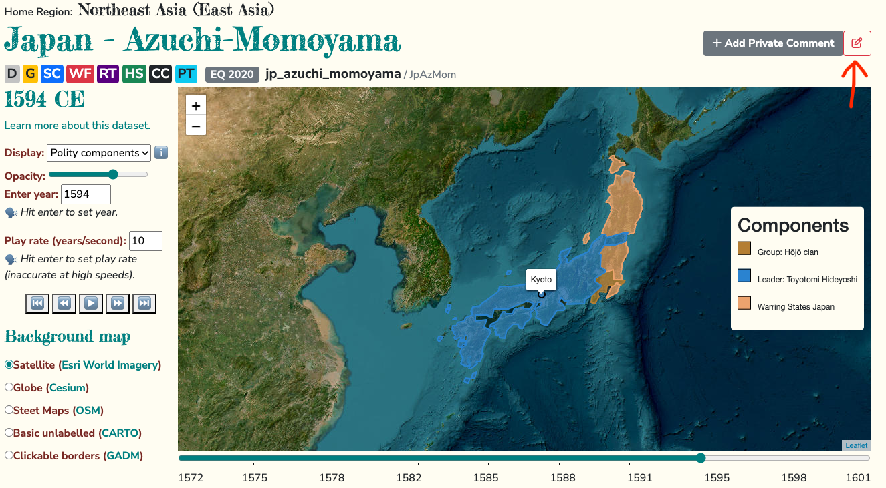
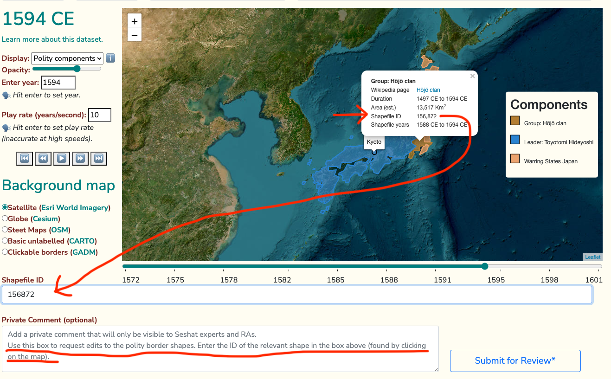

Cliopatria polity borders dataset
Cliopatria is a comprehensive open-source geospatial dataset of worldwide states, political groups, events, and rulers from 3400BCE to 2024CE. It is part of the Seshat Global History Databank project. Presently it comprises over 1800 political entities sampled at varying timesteps and spatial scales. Cliopatria is available as part of the Seshat database and API and is used on the World Map and polity pages of the Seshat website.
Working with the Cliopatria borders dataset
Cliopatria is available as a stand-alone dataset which is stored and documented at github.com/Seshat-Global-History-Databank/cliopatria. The data takes the form of a single GeoJSON file, a format that can be loaded by a wide variety of software for handling geospatial data. Whilst Cliopatria can be accessed via the Seshat API, in most cases it is faster and more convenient to download the dataset directly from the GitHub repository and work with it locally.
A great way to get started exploring the Cliopatria dataset is to open it in the Jupyter notebook examples found inside the github.com/Seshat-Global-History-Databank/cliopatria GitHub repo. The notebooks folder contains a processing script to add colors to the dataset, alongside a notebook which loads the data in GeoPandas and includes an interactive Folium plot. There is also a notebook which loads Cliopatria and plots some stats about the dataset. Follow the README instructions in the notebooks folder.
Tip
You may want to start by reading the Software tools page to ensure you have Python and Git installed on your computer.
Requesting edits to the Cliopatria dataset
Warning
🚧 This process needs to be tested and may have missing steps. 🚧
🚧 This process involves multiple people. 🚧
You can request edits to Cliopatria border shapes in the same way as you would request other edits to the Seshat database. First, review the Getting started with Seshat data page for more information on how to make and discuss data edits.
To request a specific edit to the Cliopatria dataset, such as changing the shape of a border, do the following:
Click the “Edit” button on the polity page of interest.
Fill out the edit page that opens and use the Private Comment box to explain in detail the change you would like. Note the ID of the shape you would like to change. If the change you are requesting is to multiple shapes, please list all the IDs. Click the “Submit for Review” button.
This should open a private comment thread where you can discuss the edit with other researchers. See the Discussing data edits via private comments section for more information. Assign the comment to the person who is best placed to review the edit, e.g. someone who works on Cliopatria (see the team page for more information).
The reviewer will check the edit request and either make it or ask for more information via the comment thread.
To make the edit, the reviewer will need to download the Cliopatria dataset from the GitHub repository, make the change, and then upload the new dataset to the repository.
Instructions for making new releases are available in the README of the Cliopatria GitHub repository.
After the reviewer has made the change, they will contact a Seshat Databank Admin to upload the new Cliopatria release to the Seshat database.
Once the change has been made, the reviewer will close the private comment thread and the edit will be visible on the Seshat website.